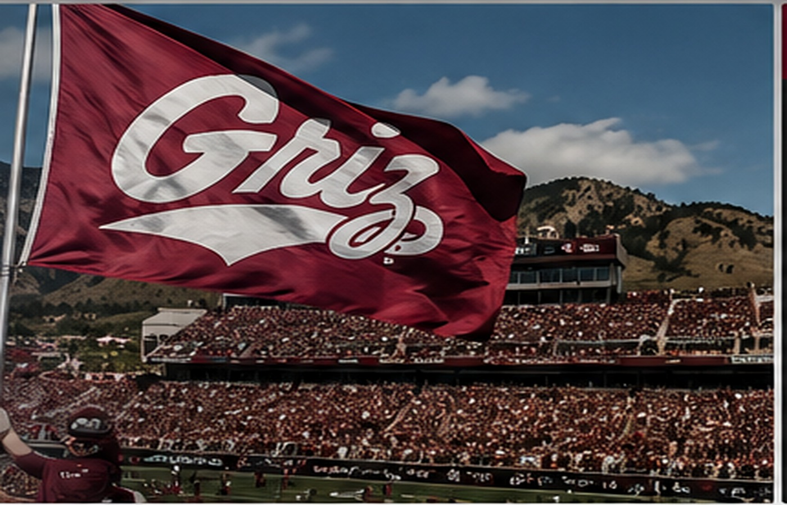

MATCHUP EDGE
WHERE THE NUMBERS LEAN
SCORING+33.0Montana points/game edge
TOTAL OFFENSE+207.5yards/game for Montana
RUSHING+86.0yards/game for Montana
POINTS ALLOWED−43.0fewer points allowed by Montana

Everything you want to know before kickoff — the matchup, the numbers, the history, the opponent, and the best places to dig deeper.

2–0 • 1–0 BIG SKY

0–2 • 0–1 BIG SKY
Through two games for each team. Utah Tech's official statistics list 205.5 yards and 3.5 points per game; Montana enters 2–0.
MONTANA UTAH TECHUtah Tech is in its first season as a Big Sky football member. The Trailblazers opened 2026 against Montana State and then traveled to BYU before coming to Missoula. The program is led by third-year head coach Lance Anderson.
Montana and Utah Tech have met twice. The Griz won the first meeting 31–14 in Missoula in 2021, then won 43–13 in St. George in 2023. This is the third game of the four-game series and the first meeting since 2023.
Start the week with the video that matters: coach interviews, player press conferences, highlights and recent games.
The scoreboard tells you who won. These numbers tell you how the opponent is built.
Your daily Montana football front page — official news, game stories, insider coverage and more.
One place to see the roster, current two-deep, position groups, experience and new arrivals. Use the explorer below instead of jumping around the page.
Filter by unit, position or class. Click a player for the full roster card.
The 2026 Montana football coaching staff, pulled from the official GoGriz staff page.


Former Montana players who transferred out after the 2025 season. 2026 performance is updated from currently published destination-school statistics; “No stats posted” means the destination has not published player stats yet.
Limited early workload, but he has already produced an explosive 6.0-yard average in his first game.
MISSOURI PROFILE ↗Important young tackle for the 2025 Griz. Iowa State has not published individual 2026 statistics yet.
IOWA STATE PROFILE ↗Depth offensive-line departure. Nevada lists him on the 2026 roster but has no individual season stats posted.
NEVADA PROFILE ↗A full-season starter and disruptive nose tackle for Montana in 2025; Iowa State has not posted individual 2026 stats.
IOWA STATE PROFILE ↗Montana's leading tackler in 2025. The Rams currently have no individual 2026 statistics posted for him.
COLORADO STATE PROFILE ↗One of Montana's biggest defensive losses. UAB lists him on the roster but has not posted 2026 individual stats.
UAB PROFILE ↗A starting corner when healthy in 2025. Duke's current player page has no 2026 individual stats posted.
DUKE PROFILE ↗Mansour did not play for Montana in 2025; HCU lists him on its 2026 roster.
HCU ROSTER ↗He's already seeing the field for Portland State and has recorded four tackles through two games.
PORTLAND STATE PROFILE ↗Returned to Mary after one season at Montana. His 2024 Mary season included 20 tackles, 3 INT and 7 PBU.
MARY PROFILE ↗One of Montana's starting safeties in 2025. Iowa State's current cumulative stats do not list individual production yet.
IOWA STATE PROFILE ↗Tracked separately from player transfers. Hauck left Montana after the 2025 season and joined Illinois as defensive coordinator.
Checking Skyline Sports
VIEW PRESS CONFERENCE ↗
From the first kickoff in 1897 to national championships, packed houses and generations of legends, Montana football has become one of the defining traditions in the FCS.
Opened October 18, 1986, with Montana's 38–31 win over Idaho State, Washington-Grizzly Stadium became the stage for the modern Griz era. Montana's 30 straight home wins from 1994–97 remain one of the signature home-field streaks in FCS history.

Montana football begins in 1897, laying the foundation for one of the state's most enduring sports traditions.
Montana wins its first Big Sky football championship, beginning a conference legacy that eventually grows to 19 titles.
The Griz rally past Idaho State 38–31 in the first game at their new home. The stadium becomes the launchpad for the modern Montana era.
Don Read's Grizzlies finish 13–2 and beat Marshall 22–20. Andy Larson's 25-yard field goal with 39 seconds left becomes one of the defining moments in program history.
Joe Glenn's 15–1 Griz beat Furman 13–6 in Chattanooga. Yohance Humphery rushed for 142 yards and a touchdown as Montana captured its second national title.
Montana beats James Madison 35–27 in the semifinal to reach the national championship game for the sixth time.
The Griz beat Appalachian State 24–17 in the semifinal before a 23–21 championship-game loss to Villanova.
Montana beats Montana State 37–7 for the 19th Big Sky title, then wins playoff thrillers over Furman and North Dakota State before returning to the national championship game.
Montana reaches the FCS semifinal for the 13th time and extends its record total to 29 playoff appearances.


Record: 13–2. Andy Larson's late field goal completed the comeback and delivered Montana's first national championship.
Record: 15–1. Yohance Humphery's touchdown and a dominant defense sealed Montana's second national championship.
The rivalry dates to 1897 and has become one of the oldest and most intense rivalries in Division I football. The 2025 season produced a historic first: two meetings in the same season, including a playoff semifinal.
Click a legend to spotlight the name and its place in Griz history.
GRIZZLY SPORTS HALL OF FAME ↗